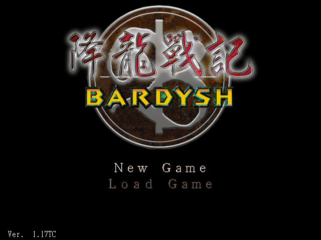
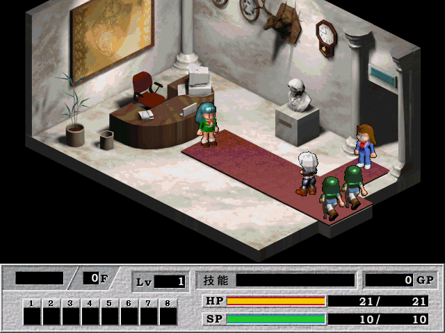
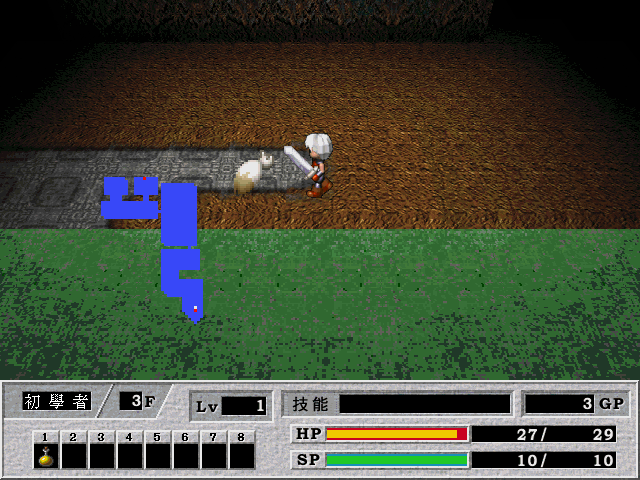

名稱：降龍戰記 (Bardysh，中文版)
簡介：TGL 1998年出品的角色扮演遊戲，由智冠中文化並代理發行，以3D視角畫面呈現，採
單人即時方式戰鬥 [待補]。



保護：無，可直接在光碟上執行。
備註：繁中版為1.17版
備註：VirtualBox執行後若顏色顯示不正確，請搭配DxWnd（可全螢幕）。
備註：Win64系統若遊戲背景音樂播放結束重播時卡頓，可安裝CoolSoft VirtualMIDISynth
和CoolSoft MIDIMapper，以取代Windows內定的MIDI device。
修改：BARDYSH.EXE
1.修正儲物衣櫃取出物品時，按左右鍵物品翻頁太快的問題
00015470: 00 66 83 3D 4C 76 4C 00 02 0F 8C 6E 00 00 00 80
-- E9 0A C1 04 00 0F 1F 00 -- -- -- -- -- -- --
00061580: 00 00 00 00 00 00 00 00 00 00 00 00 00 00 00 00
83 3D -- -- 57 -- -- 0F 8E 0B -- -- -- FF 0D --
00061590: 00 00 00 00 00 00 00 00 00 00 00 00 00 00 00 00
-- 57 -- E9 55 3F FB FF 80 3D 1B B1 55 -- -- 0F
000615A0: 00 00 00 00 00 00 00 00 00 00 00 00 00 00 00 00
85 2C -- -- -- 80 3D 9B B0 55 -- -- 0F 85 1F --
000615B0: 00 00 00 00 00 00 00 00 00 00 00 00 00 00 00 00
-- -- 80 3D 1D B1 55 -- -- 0F 85 12 -- -- -- 80
000615C0: 00 00 00 00 00 00 00 00 00 00 00 00 00 00 00 00
3D 9D B0 55 -- -- 0F 85 05 -- -- -- E9 0A -- --
000615D0: 00 00 00 00 00 00 00 00 00 00 00 00 00 00 00 00
-- C7 05 -- -- 57 -- 0A -- -- -- 66 83 3D 4C 76
000615E0: 00 00 00 00 00 00 00 00 00 00 00 00 00 00 00 00
4C -- 02 E9 91 3E FB FF -- -- -- -- -- -- -- --
檔案：BARDYSH.rar = 儲物衣櫃翻頁太快問題修正檔
操作：
上下左右 = 移動
Space/Enter = 攻擊
QW = 旋轉視角
I = 裝備欄
C = 狀態欄
Esc = 功能選單
Tab = 小地圖開關